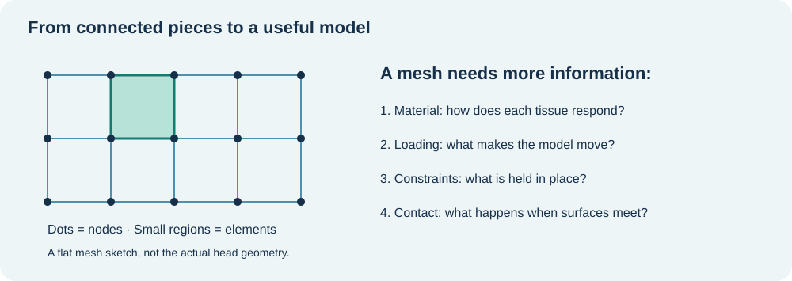
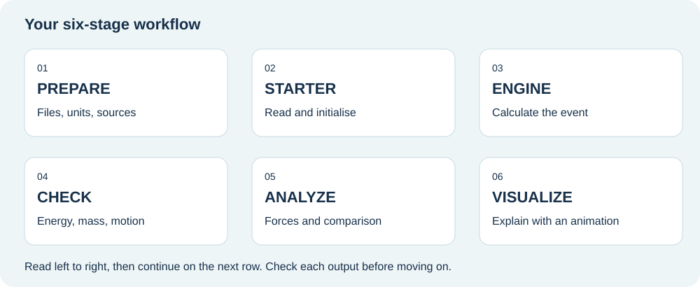
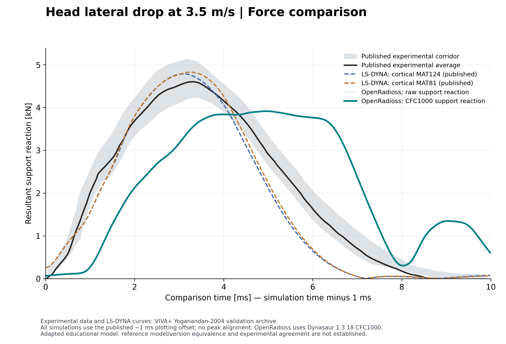
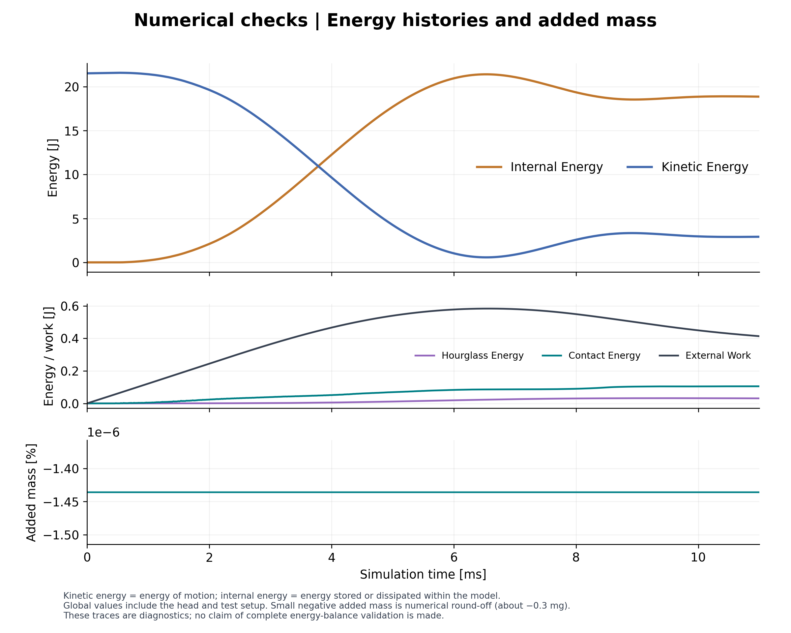
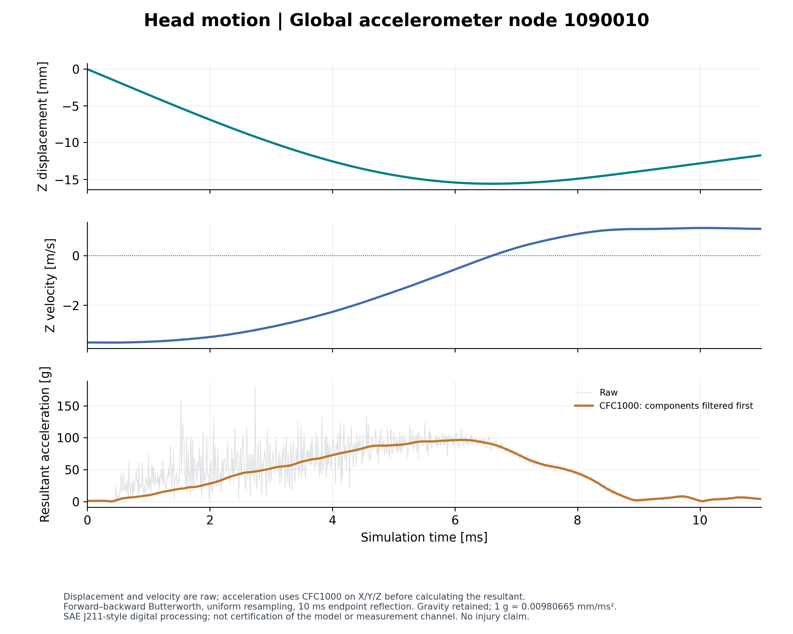
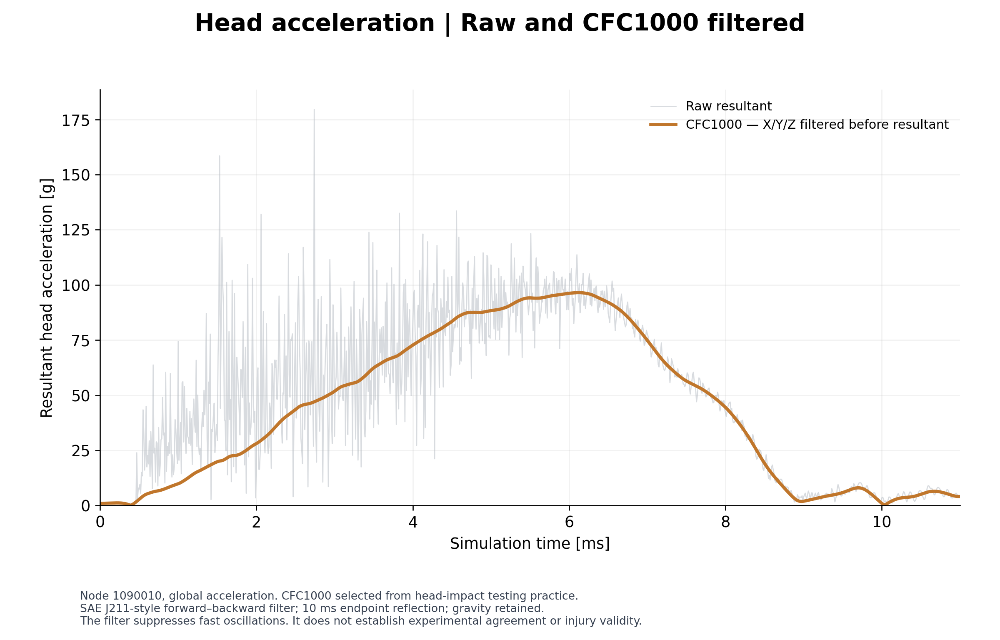
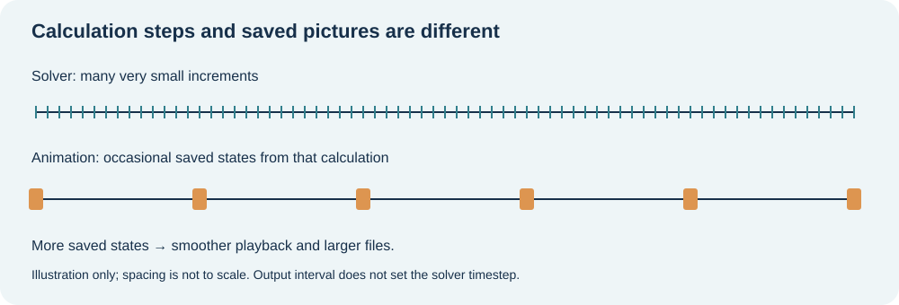

Your First HBM Simulation with Open Tools
A practical VIVA+ head-impact case study
By Yash Kumar Vari · Student pilot v0.2 · Updated 28 September 2026
Welcome! If you have learned about stiffness matrices but have never watched your own simulation move, this project is for you. We will work through one small human body model case, understand what the solver does, and turn the results into plots and an animation. One step at a time. The skull is complicated enough; the instructions should not be.
Scientific status: educational solver-adaptation study. The final support force is about 15% below the experimental average. Experimental agreement and exact equivalence to the published LS-DYNA input revision are not established.
Questions from students on LinkedIn and conversations at IRCOBI 2026 motivated this guide. If you want to enter crash simulation or biomechanics and need help turning a downloaded model into something you understand, start here.
Find your way
- What will I learn?
- The five-minute background
- What are we simulating?
- The workflow in one picture
- Tools and model downloads
- Before pressing Run
- Starter, then Engine
- Check the result
- Make sense of the forces
- Make the animation
- Try it yourself
- Troubleshooting and next steps
- Credits and further reading
The companion project record records versions, files, modifications, known results, and remaining work.
1. What will I learn?
By the end of the finished pilot workflow, you should be able to:
- Explain the main ingredients of a finite element model.
- Prepare an existing head-impact model for OpenRadioss.
- Run a short check before spending time on the full simulation.
- Read a solver log and recognise suspicious results.
- Extract a force–time curve and compare the right quantities.
- View the moving model in ParaView and export an animation.
- Explain the assumptions and limitations in a short report.
What you need to know already: basic force, displacement, stress, strain, and Newton’s second law. Some familiarity with files and folders helps. You do not need to derive a brain material law before lunch.
What this project does not teach yet: building a human body mesh from medical images, whole-body sled modelling, or making reliable injury predictions. We start with an existing head submodel and learn the simulation workflow around it.
Choose your entry point
| Route | What you do | Status |
|---|---|---|
| Understand | Read the background and interpret the example. | Ready now |
| Analyze | Use the included CSV data and Python script to regenerate four figures; no solver or HPC needed. | Tested locally |
| Run | Prepare and run the translated head case yourself. | Demonstrated on Linux/HPC; complete portable setup and Windows validation remain pending |
No paid solver licence is required for the OpenRadioss route. You still need a suitable computer or permitted access to university computing resources.
Start here: reproduce the results without a solver
Download this repository as a ZIP using Code → Download ZIP, extract it, and open a terminal in the folder containing index.html. You need Python; you do not need an OpenRadioss or LS-DYNA installation for this exercise.
Windows Command Prompt
py -m venv .venv
.venv\Scripts\python.exe -m pip install -r analysis\requirements.txt
.venv\Scripts\python.exe analysis\analyze.pyLinux or macOS terminal
python3 -m venv .venv
.venv/bin/python -m pip install -r analysis/requirements.txt
.venv/bin/python analysis/analyze.pyThe environment creation and installation need a working Python installation and internet access for packages. If py is not recognized on Windows, use python after confirming that it launches Python 3.
Expected outcome: four PNG/PDF figures in figures/, CSV/JSON analysis summaries in analysis/, and a printed OpenRadioss filtered peak of approximately 3.913 kN. The script overwrites derived figures and tables, while keeping input CSVs unchanged. Allow small formatting differences between operating systems.
Start by identifying the experimental mean and this simulation in the force plot. Then explain, in your own words, why support reaction and head-pad contact force are different measurements.
2. The five-minute background
FEM, FEA, and HBM: three abbreviations, one manageable start
| Term | In plain language | Example |
|---|---|---|
| FEM — finite element method | A way to approximate a continuous object using many smaller connected pieces | Divide a skull into elements |
| FEA — finite element analysis | Applying that method to a particular engineering problem | Calculate how the skull responds during impact |
| HBM — human body model | A numerical representation of human anatomy and its mechanical behaviour | The VIVA+ head submodel used here |
| Node | A point where quantities such as motion are described | A corner of an element |
| Element | A small region connecting nodes, with equations for its behaviour | A shell or solid element |
| Material model | A rule connecting deformation and stress, sometimes including rate or history effects | Bone and soft tissue use different rules |
| Boundary condition | A rule controlling movement or loading | Hold the support in place |
| Contact | Rules for how surfaces interact when they meet | The head meets a deformable pad |

A simple analogy: a model needs geometry, material behaviour, loads, and constraints, much like a recipe needs ingredients, quantities, and cooking instructions. A beautiful mesh with the wrong units is still the wrong recipe.
Why does an impact calculation need so many steps?
In an explicit dynamic analysis, the solver advances the motion in very small time increments. Small elements and fast stress-wave propagation can require small increments.
In the earlier completed baseline run, a typical increment was about 0.00036 ms. That gives the following estimate for an 11 ms event:
11 / 0.00036 ≈ 30,556 increments
The earlier baseline completed 30,556 cycles in about 77 minutes. This is historical runtime evidence, not a newly measured timing for the smoother-output run or a laptop estimate.
Important: the solver increment and the saved animation interval are different. Saving a picture every 0.1 ms does not mean the solver jumps forward by 0.1 ms.
3. What are we simulating?
We use the VIVA+ 50F head-without-scalp submodel in the published Yoganandan head lateral-drop setup. The working case is named drop_3.5.
| Item | Working case |
|---|---|
| Body region | Head submodel, not a complete occupant |
| Initial velocity | −3.5 mm/ms along the specified Z direction |
| Speed magnitude | 3.5 m/s |
| End time | 11 ms |
| Contact | Head and impact pad |
| Environment | Deformable pad and constrained supporting structure |
| Our solver | OpenRadioss, importing the LS-DYNA-format input |
| Our main outputs | Energies, forces, motion, and animation files |
The model is oriented and positioned by its source transformation cards. Gravity, contact, extra masses, and constraints are also part of the setup. Preserve these definitions unless an intentional, documented study requires a change.
Units: the quiet source of very loud problems
The case uses a consistent mm–ms–kg–kN system.
| Quantity | Model unit | Familiar equivalent |
|---|---|---|
| Length | mm | 1 mm = 0.001 m |
| Time | ms | 1 ms = 0.001 s |
| Mass | kg | Kilograms |
| Velocity | mm/ms | 1 mm/ms = 1 m/s |
| Force | kN | 1 kN = 1,000 N |
| Energy | kN·mm | 1 kN·mm = 1 J |
| Acceleration | mm/ms² | Gravity magnitude ≈ 0.00981 mm/ms² |
Example: the 3.5 mm/ms input speed is 3.5 m/s, not 3,500 m/s. Units save both simulations and embarrassment.
The reference run reports about 21.09 kg total model mass. This includes the setup; do not present it as the mass of a human head.
4. The workflow in one picture

| Stage | Question to ask | Evidence to keep |
|---|---|---|
| Prepare | Do the files, units, and include paths make sense? | Sources, versions, change log |
| Starter | Can the solver read and initialise the model? | Starter log and initial restart |
| Engine | Can it advance through the requested event? | Engine log and result files |
| Check | Are the numerical results sensible? | Energy, mass, timestep checks |
| Analyze | Am I comparing the correct physical quantities? | Labelled force–time plots |
| Visualize | Can someone understand the event and its limits? | Animation with units and time |
A useful habit: after every stage, check the expected output before moving on. Launching the Engine repeatedly cannot repair a missing include file. We tested that lesson thoroughly so you do not have to.
5. Tools and model downloads
Use official sources. Download links are starting points, not a guarantee that the newest release reproduces this draft’s results.
| Resource | What it does | Official link |
|---|---|---|
| OpenRadioss | Calculates the response | Website · Releases |
| OpenRadioss documentation | Explains installation, execution, and input options | Community documentation |
| VIVA+ | Supplies the human body models and their documentation | Documentation · Model repository |
| VIVA+ validation project | Supplies the reference head-drop setup and comparison material | Catalog · Repository |
| Python | Helps read results, calculate quantities, and make plots | Download · Beginner resources |
| ParaView | Displays the mesh, motion, and result fields | Download · User guide |
Find these locations inside the validation archive:
- Head input:
submodels/Head/vivaplus-50F-head-noscalp.key - Main case:
catalog/Yoganandan-2004-Head-lateral-drop/dyna/50F/drop_test/drop_3.5/main.key - Shared setup:
catalog/Yoganandan-2004-Head-lateral-drop/dyna/50F/setup/
Keep the archive’s folder structure. An include file is like a chapter referenced by the main book: moving the chapter without updating the reference makes it disappear from the solver’s point of view.
Compatibility reminder: reading an LS-DYNA input in another solver does not automatically give identical formulations or results. This project records the adaptation and checks the outcome.
6. Before pressing Run
Step A — keep an original and a working copy
Keep source files untouched. Make changes only in a working copy. Use a different result directory for a different study.
Suggested project folders:
| Folder | Contents |
|---|---|
source/ |
Original downloaded files, with their original internal structure |
working/ |
Prepared case and documented changes |
results/smoke/ |
Short check |
results/full/ |
Complete event |
results/video/ |
Run with more frequent animation output |
analysis/ |
CSV files, plots, and calculations |
notes/ |
Versions, warnings, decisions, and observations |
These are suggested names. The reference run used different cluster directories, recorded in the companion document.
Step B — record what you downloaded
Write down the archive name, release tag or commit, download date, and solver build. A filename containing main is not a fixed version: its contents may change later.
Our exact validation commit and solver build fingerprint still need to be captured before the student release. The public VIVA+ full-body version and this archived head submodel must not be assumed to be the same release.
Step C — understand the changes already made
Our working main file adds the unit declaration and corrects the head include path. Three material curves also required reordering of their existing x–y pairs to pass the input checks. That last change affects the model definition and needs engineering review; it is not simply tidying a filename.
See the input-change record before extending the case. The original preparation script is retained as a record, not a portable installer. Do not repair material curves manually without understanding their intended meaning.
Step D — use a short check first
The reference smoke test simulated 0.05 ms, took about 23 seconds, and completed 140 cycles. Its job was to check that the workflow starts. It was too short to establish that the full impact response is correct.
Which computer do I need?
The completed full run used four CPU cores on university HPC, reported about 303 MB solver memory, and took 1 hour 17 minutes. Those are measured results for that machine, not a laptop guarantee. Installation, results storage, Python, and ParaView need additional resources.
Windows instructions and a local hardware benchmark will be added after testing. For now, use the reading route or prepared results rather than guessing Windows executable names from Linux commands.
7. Starter, then Engine
OpenRadioss has two main stages. Think of the Starter as the preparation check and the Engine as the calculation.
| Program | What it does | What to inspect |
|---|---|---|
| Starter | Reads the input, maps supported cards, and prepares the model | Errors, warnings, restart creation |
| Engine | Advances the simulation through time | Numerical output and final termination |
Learn the file names
| Example | Meaning |
|---|---|
main-openradioss.key |
Working main input in LS-DYNA keyword format |
main-openradioss_0000.out |
Starter’s written report |
main-openradioss_0000_0001.rst |
Prepared initial state for the Engine |
main-openradioss_0001.rad |
Engine controls, including end time and output intervals |
main-openradioss_0001.out |
Engine’s written report |
main-openradiossT01 |
Time-history results: values saved over time |
main-openradiossA001 |
One saved animation state |
head_drop_history.csv |
Converted time-history table |
main-openradiossA001.vtk |
Converted animation state for ParaView |
Execution pattern only — not a complete installation command:
Starter → main-openradioss.key → initial restart
Engine → main-openradioss_0001.rad + initial restart → results
On the cluster, Slurm schedules the calculation. sbatch submits a batch job; squeue shows its status. This is the cluster’s queue manager, not part of the physics model. A local computer does not require Slurm.
The reference full Engine run finished with NORMAL TERMINATION. That confirms completion. It does not certify the physics. A solver can finish a very confident calculation of a badly defined problem.
8. Check the result
Read the progress line
An illustrative log line based on the reference run:
NC=11300 T=4.0680E+00 DT=3.6000E-04 ERR=-0.3% DM/M=0.0000E+00
| Label | Meaning here |
|---|---|
NC |
Cycle count: 11,300 increments completed |
T |
Simulated time: 4.068 ms |
DT |
Current increment: 0.00036 ms |
ERR |
Solver-reported energy error indicator; inspect with the energy histories |
DM/M |
Relative added-mass indicator; zero at this reported point |
3.6000E-04 means 0.00036. Scientific notation looks intimidating until you realise it mostly saves typing zeros.
Five checks before celebrating
- Completion: did the run reach the intended end time?
- Finite values: do energies, forces, and masses remain numeric, without
NaNor infinity? - Energy behaviour: can you explain how kinetic energy becomes deformation energy and other contributions?
- Mass and timestep: are added mass or a collapsing timestep influencing the result?
- Motion: does the head contact the intended surface, with sensible constraints and deformation?
Our earlier, failed whole-body runs showed NaN in the Engine logs but repeated 0.5 values in several converted CSV columns. Therefore “all CSV values are finite” was not sufficient. An isolated value of 0.5 can be perfectly valid; repeated identical values across unrelated signals deserve investigation. This is an observed diagnostic clue, not a universal converter rule.
A simple energy example
For a hypothetical 2 kg object moving at 3 m/s:
kinetic energy = ½ × mass × speed² = ½ × 2 × 3² = 9 J
When it hits a pad, some motion slows and the pad deforms. You expect kinetic energy and internal energy to change together, with external work, contact, damping, and other terms included in the balance.
Do not insist that kinetic energy must always be tiny compared with internal energy: this is a dynamic impact, not a quasi-static loading exercise.
9. Make sense of the forces
First identify where the experimental measurement was taken. For this reference, compare the reaction at the rigid support beneath the pad.
| Signal | Definition | Final-run raw peak |
|---|---|---|
| Head-pad normal contact force | Interface 100000; resultant of FNX, FNY, FNZ only | 3.135 kN |
| Support reaction | Node 9041005 of rigid support part 100003; resultant of REACX, REACY, REACZ | 3.918 kN |
The pad is a dynamic system, so the two forces need not match at every instant. A resultant is sqrt(Fx² + Fy² + Fz²); retain signed components when direction matters.
Final smooth-run force comparison

| Curve | Peak force | Peak time on comparison axis |
|---|---|---|
| Experimental average | 4.601 kN | 3.325 ms |
| Published LS-DYNA, cortical MAT124 | 4.785 kN | 3.110 ms |
| Published LS-DYNA, cortical MAT81 | 4.825 kN | 3.260 ms |
| This OpenRadioss run, CFC1000 | 3.913 kN | 4.960 ms |
Finding: the filtered OpenRadioss peak is 14.95% lower and 1.635 ms later than the experimental average on this comparison axis; the pulse shape also differs. This is a descriptive comparison, not a validation pass/fail criterion.
Filtering and the time axis
OpenRadioss support-force X/Y/Z components are resampled onto a uniform grid, filtered individually with CFC1000 using Dynasaur 1.3.18, then combined into a resultant. Published LS-DYNA CSVs are already processed and are not filtered again. The raw peak is 3.918 kN; filtering changes it only slightly, so it does not explain the mismatch.
The comparison follows the reference notebook by plotting simulation time minus 1 ms. Experimental times remain unchanged. Equal physical contact onset has not been independently established. No curve is shifted to align its peak. Energy and motion plots use original simulation time.
Energy and motion checks

All 1,100 × 647 numeric values are finite. Total mass is 21.086 kg, including the support/setup; it is not head mass alone. Added mass is approximately zero. Peak absolute hourglass energy is approximately 0.149% of initial kinetic energy. These checks support interpretation but do not establish experimental agreement.

Displacement and velocity describe node 1090010; head displacement includes rigid motion and must not be labelled skull deformation. Its resultant acceleration uses component-wise CFC1000 filtering: approximately 96.5 g at 6.12 ms, versus a raw peak of 179.5 g. This is a nodal response, not an injury prediction. The selected filter is a head-impact processing convention; full SAE channel compliance has not been established.
See the larger acceleration plot and method details

The acceleration routine uses SAE J211-style coefficients with forward/backward filtering and documented endpoint reflection. Its endpoint handling differs from the legacy Dynasaur force routine. See METHODS.md for sampling, padding and source details.
What could explain the solver difference?
OpenRadioss translates LS-DYNA keywords to its own formulations. In our Starter report, the pad’s MAT_063 becomes LAW33. The original pad input includes Poisson’s ratio 0.43; LAW33 theory describes uncoupled stresses and zero Poisson effect before full compaction. This gives us a concrete material-behaviour question to investigate.
Checks of the imported listing preserved the pad density, elastic modulus and 113 curve-11 point values, with a strain-sign conversion; the detailed friction law retains 0.7. Curves 10, 112 and 150 were reordered elsewhere; the active pad material references curve 11. Those facts narrow the investigation, but they do not establish the cause of the full-head mismatch.
A separate one-element compression test was used to investigate lateral motion and unloading. Its results remain a research observation requiring controls, including PR=0 tests, element-formulation checks and a pad-only intervention in the head case. Contact, other mapped materials and reference revision differences remain possible contributors. Documented LAW33 behaviour is not itself evidence of a software bug.
Sources: MAT_063 mapping · LAW33 theory. Confirm the current mapping for your exact solver build.
10. Make the animation
The smoother run has completed. Its verified export contains 111 frames, shown at 24 fps in 1560 × 780 resolution. The supplied video repeats the same simulation five times: 23.125 seconds of slow-motion playback, not five independent tests. Repetitions were made without re-encoding.
Animation output was requested every 0.1 ms. The solver still advances at its much smaller time increment. Frame indices 0–110 are not milliseconds.

Demonstrated conversion syntax on Linux, after the tools are installed and available in the current directory or command path:
th_to_csv_linux64_gf main-openradiossT01 head_drop_history
anim_to_vtk_linux64_gf main-openradiossA001 > main-openradiossA001.vtk
The first command produces head_drop_history.csv. The second converts one animation state. Our cluster used full executable paths and Slurm; these short examples explain the syntax rather than replace the pending portable setup instructions.
In ParaView
- Open the grouped
.vtkfile sequence using File → Open. - Click Apply so ParaView loads the data.
- Choose a useful view and play the sequence.
- If available, colour by displacement magnitude and label it in mm.
NODE_IDis an identifier, not a physical response. - Keep one colour range across the animation so colours have consistent meaning.
- Save the view with File → Save State.
- Export with File → Save Animation. MP4 availability depends on the installed build; a PNG image sequence is another export route.
Before sharing: show the case name, initial speed, displayed quantity and unit, and correct physical time. If ParaView shows frame numbers 0, 1, 2, …, do not label those numbers “ms.” Actual timestamps need to be assigned or verified.
At 24 frames/s, 111 saved states play in about 4.6 seconds. This is slow-motion playback of an 11 ms event. Repeating frames can make the clip longer but does not create new simulation information.
11. Try it yourself
| Task | Your answer should show |
|---|---|
| Convert 3.5 mm/ms to m/s | Understanding of consistent units |
| Estimate cycles for 11 ms at 0.00036 ms | Difference between physical time and computation |
| Explain the two force signals | Awareness of the measurement location |
| Find peak force and its time | Ability to extract a meaningful result |
| Identify one limitation | Scientific judgment |
| Create a labelled 10-second presentation clip | Clear communication; slow playback or looping is fine if labelled |
Check the first two answers
3.5 mm/ms equals 3.5 m/s. The estimated cycle count is about 30,556. Actual timesteps may vary, so this is an estimate, not an instruction to force that exact count.Your final mini-report can be one page: question → model → checks → result → limitation. A classmate should be able to understand it without decoding your terminal history.
12. Troubleshooting and next steps
| Symptom | First useful action |
|---|---|
| Include file not found | Confirm the file exists and inspect the include path relative to the case |
| Missing shared library on Linux | Follow the solver environment setup; do not repeatedly rerun the same command |
| Function-read error | Read the full curve ID and error description; inspect a working copy and seek help before changing data |
| Starter writes no restart | Resolve Starter errors before launching the Engine |
| Normal termination but suspicious results | Inspect the log, energies, mass, and motion together |
| Animation barely moves between frames | Check the saved-state interval and displayed sequence |
| Command not found after pasting | Copy the command only, without the terminal prompt or previous output |
| Downloaded archive will not extract | Check download completion; do not assume it is a model error |
What is ready, and what comes next?
- Ready: the final smooth MP4, four figures, raw history, reproducible analysis and this guide.
- Documented: support-force discrepancy, processing choices, material mapping and input edits.
- Still needed for a full run tutorial: fixed source revision and solver fingerprints, complete portable setup, tested Windows execution and independent student reproduction.
- Research: controlled pad tests and reference-version checks before explaining the full solver difference.
Student questions and feedback
Use GitHub Discussions → Q&A for learning questions. Use Issues for broken instructions, missing files or a reproducible error. Your question may help the next student too.
When this page is hosted on the standard GitHub Pages address, these buttons connect to the matching repository automatically. In an offline copy, use the Discussions or Issues tab in the repository you downloaded.
Include this with your question
Operating system and tool versions:
Guide section / step:
What I expected:
What happened:
Exact error text:
What I already tried:Remove credentials and private paths from logs. Student feedback is welcome; this is a pilot guide, and the author’s response time is not guaranteed.
13. Credits and further reading
This educational workflow is being prepared by Yash Kumar Vari. VIVA+ developers created the human body model, and the validation contributors supplied the published test setup and reference material. The project adapts and documents execution and analysis with OpenRadioss, Python, and ParaView.
- VIVA+ documentation and citation instructions
- John, Klug, Kranjec, Svenning and Iraeus (2022), Hello, world! VIVA+: A human body model lineup to evaluate sex-differences in crash protection.
- VIVA+ validation catalog — find the Yoganandan 2004 head lateral-drop case and its original experimental references.
- Running OpenRadioss
- ParaView: saving results, animations, and state
Retain each source file’s licence and notices. This draft does not relicense the model or reference data. It is an independent educational project and does not imply endorsement by Audi, VIVA+, or the software providers.
Your first goal: understand one result well enough to explain it. More elements can wait.
Project record · v0.2
This update uses the completed smooth-run history head_drop_final_history.csv. It supersedes the earlier unfiltered 3.92 kN estimate. The full quantitative methods are in METHODS.md; input changes are in inputs/README.md.
| Item | Recorded evidence | Limit |
|---|---|---|
| Source | VIVA+ validation archive; published notebook says 2.0.0 beta 1 / LS-DYNA R12.1 | Exact archive commit is not established. |
| OpenRadioss | Linux GNU double-precision Starter/Engine; baseline 0 errors and 11 warnings | Exact build/executable hashes still needed; copyright year is not a version. |
| Final history | 1,100 rows × 647 columns; all finite; last saved time 10.99029 ms | History need not include the requested 11 ms endpoint. |
| Final animation | 111 frames at 24 fps; 1560 × 780; five repeats | Frame count and playback time are not physical timestamps. |
| Input changes | Units, head include path, curves 10/112/150 reordered in a separate setup | Preserved point pairs do not guarantee preserved material interpretation. |
| Pad mapping | Material 10, active curve 11, MAT_063 → LAW33 | Requires controlled material and system tests; not a proven explanation of all discrepancy. |
The original baseline ran on four HPC CPU cores and reported about 303 MB solver memory and 77 minutes runtime. Those measurements exclude additional storage and postprocessing needs and are not performance guarantees for the final animation run or another machine.
Source hashes: included analysis inputs are recorded in analysis/input_sha256.json. The original setup used for the cube material extraction had SHA-256 405f25d20c07b6ed1b856d31d6ecba94334f5c19ec2594367947738ed6134c53. This identifies those bytes, not the unknown upstream commit.